3rd Party BACnet Reference
This section provides background information on integrating BACnet project data into Desigo CC . Integration permits the user to access objects from corresponding third party BACnet devices and monitor or edit them in the management platform. For related procedures, see the step-by-step section.

Safety functions
Observe all applicable standards for the country as well as regional or local regulations when integrating safety functions.
Engineering
Third party BACnet devices can be integrated in the management platform Online or Offline depending on the application or availability of project data. The selected import to the management platform also impacts how project data is depicted in System Browser.
Online Import
For online engineering, you must connect to the third party BACnet device online in order to import project data in the management platform.
Advantage
- You import the latest project data from the third-party BACnet device.
- Extensive coordination with the third-party BACnet device project engineer is not required.
NOTE: The following information must, however, be clarified in advance: PICS, device ID, device name, UDP port.
Disadvantage
- Scanning the network can take quite a long time.
- The hierarchy structure for viewing in System Browser cannot be influenced if the texts are unstructured.
Offline Import
You need an Engineering Data Exchange (EDE) file for the offline import of third-party BACnet devices in the management platform. An online connection with the BACnet device is not required.
Advantage
- Engineering can take place in the office.
- Multilanguage is supported.
- The following views are supported in System Browser:
- Management View (generated automatically by the system cannot be influenced).
- Logical View (controlled via the Configuration file)
- User View (only if already created in the engineering tool and it is then controllable via the Configuration file)
- Graphic engineering can be completed in advance at the office.
Disadvantage
- Project data from the third-party BACnet device may not be up-to-date.
- Requires more coordination to receive the EDE data from the third-party BACnet device project engineer.
Views in the System
The data points are displayed in various views, depending on the import type. The Management View is generated on all import types.
Online
The list of imported data points can be displayed alphabetically after an online import.
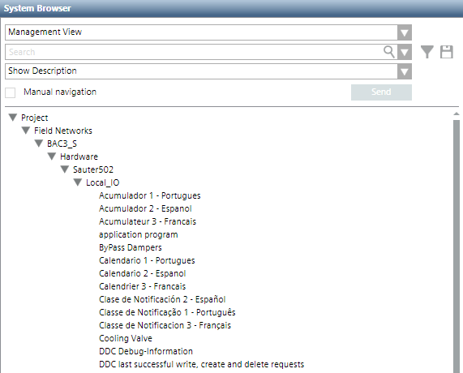
Offline
In addition to Management View, that is identical offline to the Online variant, the Logical View and the User View can also be generated offline using Configuration files.
Hierarchy View in System Browser | |
Logical View | Configuration of the Logical View |
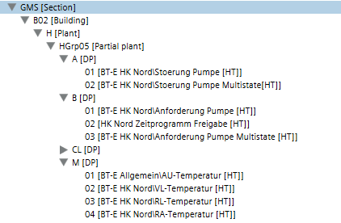 | 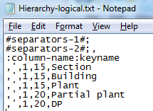 |
Hierarchy View in System Browser | |
User View | Configuration of the User View |
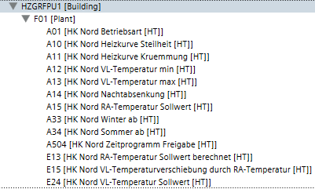 | 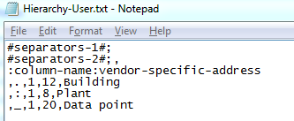 |
PICS
The Protocol Implementation Conformance Statement (PICS) document lists all devices of the manufacturer and describes the supported BIBBs, object types, characters sets, and options of communication. PICS of the respective manufacturers are listed under:
The following PICS are available for vendors’s devices:
- BACnet Advanced Operator Workstation (B-AWS)
- BACnet Building Controller (B-BC)
- BACnet Advanced Application Controller (B-AAC)
- BACnet Application Specific Controller (B-ASC)
- Other BACnet Devices (B-Oth)
Supported Object Types
Functions AutoDiscovery or EDE Import support only standard BACnet objects, i.e. BACnet extensions made by the manufacturer are not supported by these Desigo CC functions. The current version supports the defined BACnet objects in the following library: Project > System settings > Libraries > BA (HQ) > Devices > BACnet > Object models.
Object Types in the Library BA_Device_BACnet_HQ_1 | ||
Short Name | English | German |
ACC | Accumulator | Counter input |
AE | Alert Enrollment | Alert Enrollment |
AI | Analog Input | Analogeingabe |
AO | Analog Output | Analogausgabe |
AV | Analog Value | Analogwert |
AVG | Average | Mittelwert |
BI | Binary Input | Binäreingabe |
BO | Binary Output | Binärausgabe |
BSV | BitString Value | Bitfolge |
BV | Binary Value | Binärwert |
CAL | Calendar | Kalender |
CMD | Command | Befehl |
CSV | Characterstring Value | Zeichenfolge |
DEV | Device | Gerät |
DPV | Date Pattern Value | Datumsschema |
DTPV | Date Time Pattern Value | Datum/Zeit-Schema |
DTV | Date Time Value | Datum/Uhrzeit |
DV | Date Value | Datum |
EE | Event Enrollment | Ereignisregistrierung |
ELOG | Event Log | Alarmaufzeichnung |
FIL | File | Datei |
GGRP | Global Group | Globale Gruppeneingabe |
GRP | Group | Gruppe |
IV | Integer Value | Ganzzahlwert |
LAV | Large Analog Value | Analogwert mit doppelter Genauigkeit |
LSP | Life Safety Point | Gefahrenmelder |
LSZ | Life Safety Zone | Sicherheitsbereich |
LC | Load Control | Laststeuerung |
LP | Loop | Regler |
MI | Multistate Input | Mehrstufige Eingabe |
MO | Multistate Output | Mehrstufige Ausgabe |
MV | Multistate Value | Mehrstufiger Wert |
NC | Notification Class | Meldungsklasse |
NF | Notification Forwarder | Notification Forwarder |
NS | Network Security | Netzwerksicherheit |
OSV | OctetString Value | 8-Bit-Zeichenfolge |
PR | Program | Programm |
PC | Pulse Converter | Pulszähler |
PIV | Positive Integer Value | Positiver Ganzzahlwert |
SCHED | Schedule | Zeitplan |
SV | Structured View | Strukturierte Ansicht |
TLOG | Trend Log | Trendlog |
TLOGM | Trend Log Multiple | Mehrfaches Trendlog |
TPV | Time Pattern Value | Zeitschema |
TV | Time Value | Uhrzeit |
Workflow Importing Data
A BACnet driver and a network must be created or exist in advance for online or offline import.

NOTE:
Select the same type of import for each manufacturer and network to avoid potential data loss.
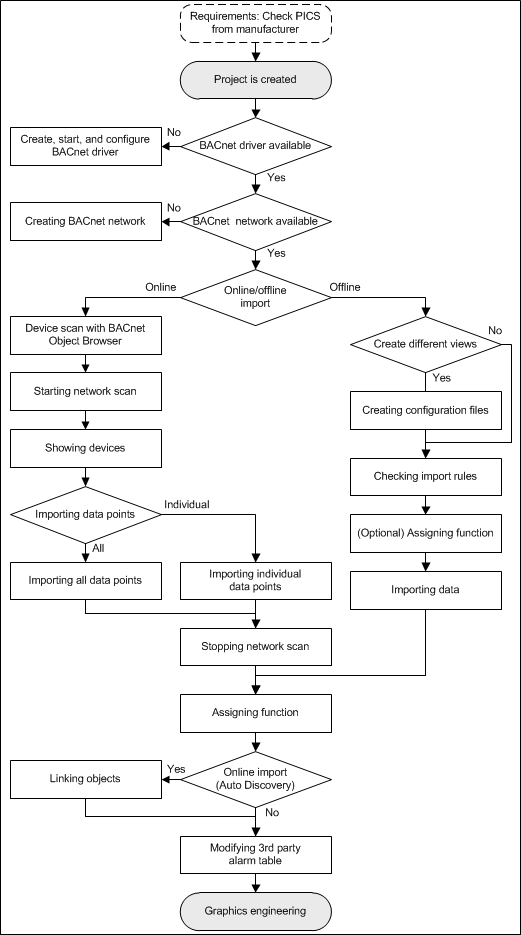
Concept EDE File
BACnet ensures interoperability among devices from various manufacturers. The EDE file documents BACnet project data of a device and integrates it in Desigo CC.
Project data
EDE data is designed as follows to exchange project data:
- General project information
- Required information for an individual object (column: Mandatory)
- Required information for an individual object (column: Optional)
Available optional information is taken over as an object instance in the project database. In the event that no optional information exists in the EDE file, the missing information is derived from the Function or the Object Model.
Object information
Two data formats (CSV and XLSX) are available for data import to prepare object information. In addition, the file format may differ for CSV.
CSV file format
- Information is located in various CSV files:
- Object description
- Object type
- Unit
- State text
- All information is available in a CSV file (object description, object type, unit, state text). The individual information is defined in the corresponding column.
XLSX file format
- All information is available in a XLSX file (object description, object type, unit, state text). The individual information is defined under its own tab.
The Desigo CC import function supports these three data forms. An error message is displayed if the data format does not meet the requirements.
NOTE:
By default, the object type is taken over from the associated Object Model for the BA_Device_BACnet_HQ_1 library (Family = BACNET). A different library may be referenced by using the Family attribute. The information from the EDE standard file is ignored during import.
Hierarchy Mapping in System Browser
Multiple views of an object are possible in System Browser depending on the integrated field networks:
- Project data is only displayed in Management View without additional configuration. The information from the Object Name column is taken to create the objects in the Management View.
- The Logical and User Views can be controlled using a configuration file (Hierarchy-Logical.txt or Hierarchy-User.txt). The company executing the project must comply with project specifications to properly map the hierarchy in Desigo CC. This is the only way to hierarchically import the object information using separators and to display it in System Browser.
Field Network-Specific Special Cases
Behavior (creating objects or views) during import may differ from the standard EDE file depending on the field network used. The requirement for integration is that the extension module Desigo_System and the corresponding field network extensions are available in the project.
Subsystem or Interfaces Used | ||
Name | Import with | Comments |
SX Open | Standard EDE | Edit the EDE file |
Integration of Simatic S7 Solutions
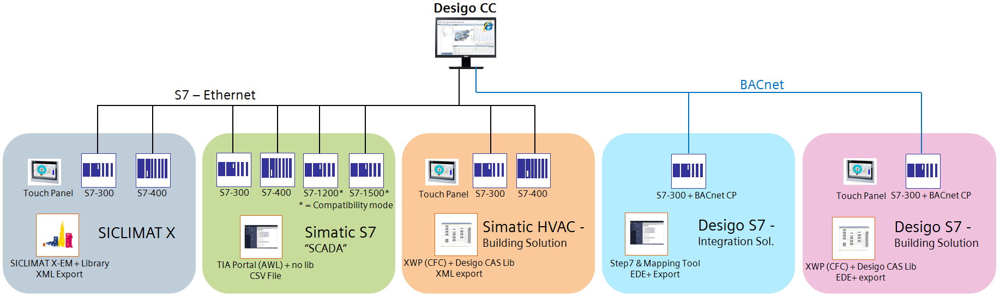
Simatic S7 Integrations | ||||
Integration of | Required EMs | Import with | File format | Comments |
Siclimat X | Siclimat | Siclimat Importer | XML | See Siclimat X information |
Simatic S7 Scada | Simatic_S7 | S7 Importer | CSV | See Simatic S7 information |
Simatic HVAC Building Solution | Siclimat Simatic_S7 Desigo_PX | Siclimat Importer | XML | Use the Desigo PX documentation |
Desigo S7 Integration Solution | BACnet_EDE | Standard EDE Workflow | EDE | Edit the EDE file |
Desigo S7 Building Solution | BACnet_EDE Desigo_System Desigo_PX | Standard EDE Workflow | EDE | Check the EDE file |
Adding Object for Hierarchy Mapping
For field networks that do not know objects for mapping hierarchies, all objects with the same descriptive text, for example Meters, are displayed one below the other which makes it difficult to select a particular object.
To render selection more user friendly, the EDE file must be extended by an additional entry for each object. It is this object that carries the corresponding description.
View in System Browser | |
Without editing of the EDE file | With editing of the EDE file |
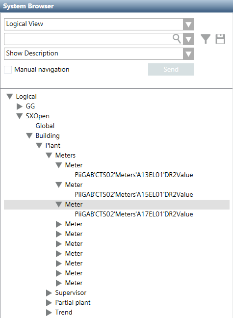 | 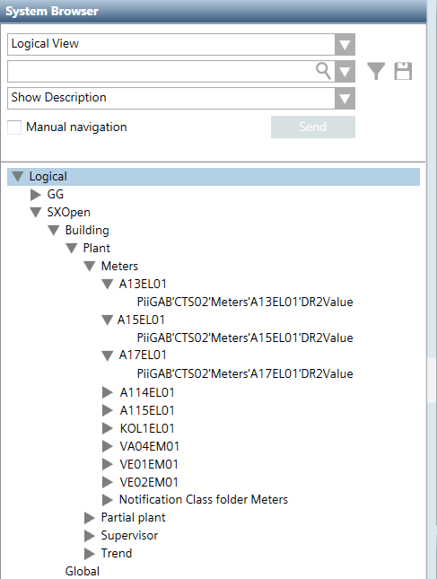 |
- The following description refers to the table view in the System Browser.
- The Hierarchy-User.txt (optional) and Hierarchy-Logical.txt (required) files cannot be selected. The files are unavailable, so that no or only the defined view is created.
- Open the EDE file using an editor.
- Add an empty line before each Meters.
- In the keyname column, enter a name and shorten this text by one level.
− Original text (blue arrow): PiiGAB'CTS02'Meters'A17EL01'DR2Value
− Added text (red arrow): PiiGAB'CTS02'Meters'A17EL01 - In the Object name column, enter a name and shorten this text by one level.
− Original text (blue arrow): PiiGAB'CTS02'Meters'A17EL01'DR2Value
− Added text (red arrow): PiiGAB'CTS02'Meters'A17EL01 - In the description column, enter a description, for example: A17EL01.
- Entries cannot be made on added lines in the following columns:
− device-object-instance
− object-type
− object-instance - Save the EDE file.
- Import the file and check the changes.
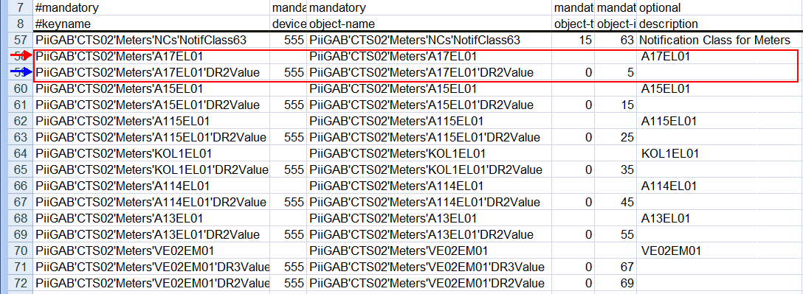
NOTICE
Prevent Data Loss
Any changes made to previous versions are overwritten once a newly generated EDE file is imported.
Back up the edited EDE file and compare the changes to the new EDE file. Edit one or both of the EDE files and import the revised EDE file.
Alternatively, use the SX Open tool to make the relevant changes to the EDE file.
Creating Desigo PX Objects
An EDE file can be extended to include additional column information. This creates a Desigo PX BACnet object, if extensions are available, rather than a standard BACnet object. It is thus 100% compatible with Desigo PX.
Additional Columns for Desigo PX objects | ||
Column name | Information | Example PID Controller |
Object-profile-number | Required | 12 |
Object-profile-name | Optional | PID Controller |
User Designation | Optional |
|
Function-name | Required | PIDCtr |
Function-name-reference | Optional | TxG25059Tx1 |
Short-name | Required | PCtr |
Short-name-reference | Optional | TxG26005Tx7 |
Element-type | Optional | 4 |
Main-parameter | Optional |
|
Resolution | Optional |
|
Device-name | Optional | AS01 |
NOTICE
The display in System Browser is incorrect
The columns Function name and Short name are required for the program to be able to switch to the S7 mode The information in the columns depends on the function but the columns can also be empty.
− A Logical View, but no User View, is created if there are no Hierarchy-User.txt and Hierarchy-Logical.txt files. The Logical View is then derived from the object name (Delimiter = ' ; min = 1; max = 50) and hard-coded.
Naming Conventions
File Names
The following naming conventions apply if object description, object type (is not evaluated), unit, and state text are saved in different CSV files.
Naming Conventions for EDE Files | ||
Variant 1 | Variant 2 | Variant 3 |
Example_EDE.csv | Example_EDE.csv | Example_EDE.csv |
Example_ObjectTypes.csv | Example_Object-Types.csv | Example-object.csv |
Example_StateTexts.csv | Example_State-Texts.csv | Example-states.csv |
Example_Units.csv | Example_Unit-Texts.csv | Example-unit.csv |
An error message is displayed if the file names for object type, unit, or state text cannot be determined.
Column Titles
Column titles may vary depending on the manufacturer. At a minimum, the keyword must be included in the column title for the import to be executed correctly (case-sensitive).
Naming Conventions for EDE Columns | |
Keyword | Specified by EDE Template |
keyname | keyname |
Device | device-object-instance |
object-name | object-name |
object-type | object-type |
object-instance | object-instance |
description | description |
Default | present-value-default |
Min. | min-present-value |
max | max-present-value |
hi | hi-limit |
low | low-limit |
state | state text reference |
unit-code | unit-code |
unit-text | Siemens-specific |
Vendor | vendor-specific address |
Function | Siemens-specific |
Resolution | Siemens-specific |
EoType | (Optional) Eo type mapping (Used only together with the family attribute.) Each line must be assigned an Eo type. |
A keyword used in multiple columns may result in an incorrect data import. Use the column titles according to the EDE specification where possible.
Mapping in System
Indicates where the information is displayed in the system.
Mapping in System | |
Column | Use |
keyname | Is needed to map the hierarchy. |
device-object-instance | Unique device ID in the BACnet network. |
object-name | Unique name within the device. |
object-type | Defines the object type to determine the corresponding object model. |
object-instance | Instance number for the same object type. |
description | Description of the data point text in the views for import:
|
present-value-default | Is not evaluated by the system. |
min-present-value | Under the condition that changes of values that are less than the defined value are not executed. |
max-present-value | Under the condition that changes of values that are greater than the defined value are not executed. |
hi-limit | Is not evaluated by the system. |
low-limit | Is not evaluated by the system. |
state text reference | Display state value for binary or multistate data points. |
unit-code | Reference number for the unit text column. |
unit-text | Unit applied to analog values. |
vendor-specific address | Vendor's ID. |
Function | Reference to the applied Function. A corresponding Function and a Function key must be defined. |
Resolution | Resolution value for a data point. |
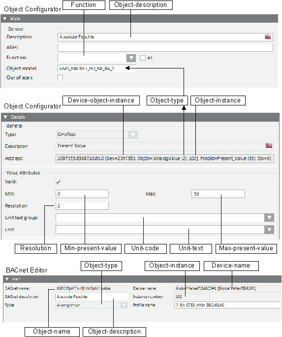
Format of Configuration Files
Terms
- File delimiters
- Defines where a new entry (column information) starts in the main file (CSV).
- In the main file, defines the inline state texts (off, on), and in the supplemental files, where a new entry (column information) starts.
- Definition delimiter
Defines the delimiter used to separate individual entries in the configuration file. - Hierarchy delimiter
Defines the applicable hierarchy level when importing the object.
Delimiters in the files
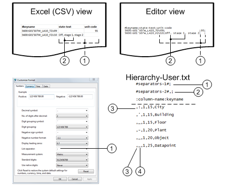
Functionality of Delimiters | ||
| Use | Description |
1 | Main file | The file separator semi-colon (;) is used as the default character in the main file. If another separator is required, you can change it in the Configuration files (separators-1). The file separator is dependent on the regional settings in Windows when using Excel: Control Panel > Clock, Language, Region > Change the date, time, or number format > Additional settings > List separator. |
2 | Secondary file Inline texts in the main file | The file separators comma (,) or semi-colon (;) are used as default characters in the main file as inline text and in the secondary files. If another separator is required, you can change it in the Configuration files (separators-2). |
3 | Definition | In the configuration file, always the first character of each line (for example, #, space, letter). The definition separator must differ from the hierarchy delimiter for the corresponding line. |
4 | Hierarchy | The hierarchy delimiter can differ for each hierarchy or is always the same. The hierarchy delimiter used depends on the user structure. |
Example: Hierarchy Separator in a Data Point | |
Delimiter | Data point |
Different | AAAA_BBB:CC'DDD.EEE |
Equal | AAAA_BBB_CC_DDD_EEE |
General
A text editor can be used to create the Hierarchy-User.txt and Hierarchy-Logical.txt files. The file format for the Hierarchy-User.txt and Hierarchy-Logical.txt files is divided into two parts:
- Design of EDE file
- Design of Hierarchy mapping
File format
!encoding!utf-8
#separators-1#;
#separators-2#,;
#separators-3#|
:column-name:keyname
,_,1,15,Location|Location|Standort
,:,1,15,Building|Bâtiment|Gebäude
,_,1,15,Floor|Plancher|Stockwerk
,_,1,20,Plant|Installation|Anlage
,_,1,20,Object|Objet|Objekt
,_,1,25,Data point|Point|Datenpunkt
NOTE:
Any character may be used as the definition separator but it must not occur in the corresponding line.
Partial Definition for EDE File
Five properties can be used to import an EDE file to Desigo CC:
- Encoding (Optional):Must be used, if imported characters are no displayed correctly
- Separators-1(Optional): Default = ";")
- Separators- 2(Optional): Default = ";,")
- Separators- 3(Optional): Default = "|") Use only in the event of multiple languages
- Column-name(Optional): Default (logical) =
„object-name“,Default (user) ="keyname" - Family(Optional): Default = "BACNET”
Syntax for the EDE Component
!encoding!utf-8
#separators-1#;
#separators-2#,;
#separators-3#|
:column-name:keyname
Use the Family Attribute
The Family attribute may be used to choose other Object Models than the ones from the standard BACnet library (Family = BACNET). Mapping of the BACnet types to EO-Type is hard coded by default. This means that the Family attribute can only be used for libraries which are 100% BACnet compliant, (for example Object-Type ‘0’ EO_BA_AI_1, ‘1’ EO_BA_AO_1, …).
If this is not the case, the EDE files must be expanded by a new column (with the name EoType to indicate the Eo-Type for each object
Example of use of EO type:
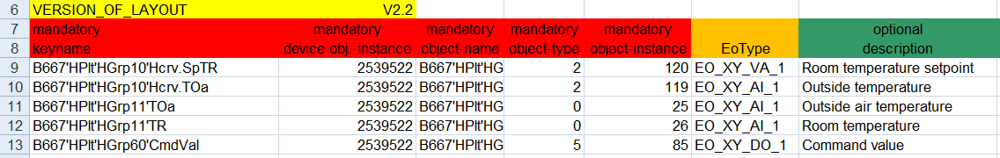
Example of use of Family attribute:
!encoding!utf-8
#separators-1#;
#separators-2#,;
#separators-3#|
:column-name:keyname
;Family;System_name
+EOType-Aggregator+EO_System_name_AGG_1
?EOType-Folder?EO_System_name_FDR_1
The hierarchical object model aggregators and subsystem folders must be defined to use the flexible import rule Family. The aggregator and folder are added to the hierarchy structure as needed during the import of the EDE file.
Multilingual support
The following must be fulfilled for multilingual support.
- A unique separator must be defined for
#separators-3#|in files Hierarchy-User.txt and Hierarchy-Logical.txt. - The sequence of the language entries in the EDE files is defined as per the sequence on the System Management Console.
- The texts are available in the description column of the EDE file and separated by separator 3.
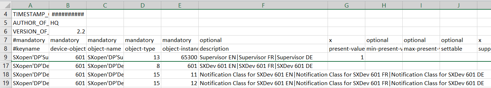
- When using a state text file, the texts are available in the desired languages and separated by separator 3.
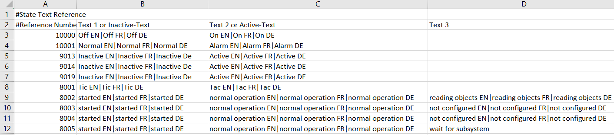
- The desired languages are available and separated by separator 3 in files Hierarchy-Logical-Map.csv and Hierarchy-User-Map.csv. A second data import is required to write the texts to the project data base.
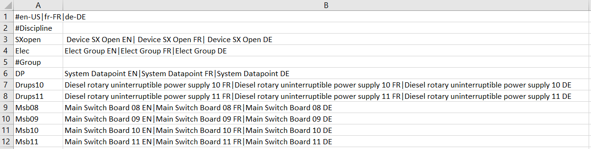
Is only the national language (for example, de-DE) use on a project, the first language must be defined as en-US and separated by separator-3.
Example en-US and de-DE:
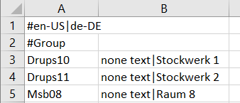
Example for en-US only:
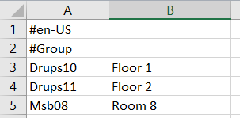
Files Hierarchy-Logical-Map.csv and Hierarchy-User-Map.csv | |
Without translation | With translation |
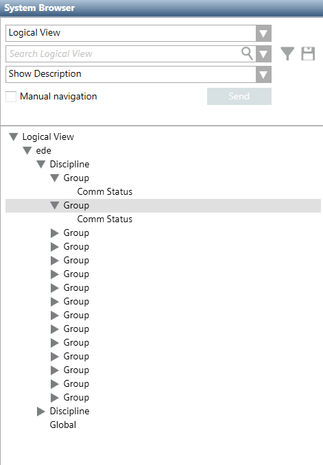 | 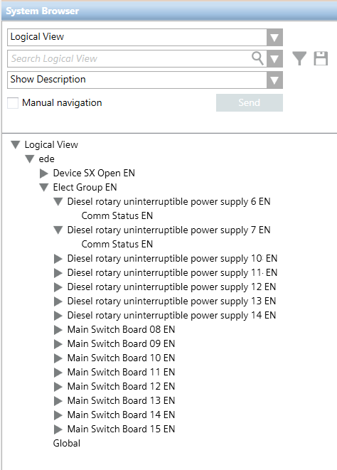 |
Encoding
Encoding permits clear assignment of characters (alphanumeric) and symbols within a character set. The characters are partially displayed incorrectly in the system if encoding is false. This generally occurs if an EDE file is created on a computer in Western Europe and then imported to a computer used in Eastern Europe. Usually, this is not a problem if encoding UTF-8 (with BOM) is used when saving the EDE file.
Troubleshooting version 1
On the first row, define the code-page information that was created with the EDE file. If the code page information is unknown, try entry encoding=UTF-8.
The explicit entry for the correct encoding normally supplies the correct results. The advantages of this variant:
‒ No further settings are required if a supplier provides a new EDE file.
‒ The encoding only needs to be defined one time in the configuration file when importing multiple EDE files.
Encoding can be indicated both as text as well as numerically: For example 1252 or Windows-1252.
Troubleshooting version 2
Open the EDE file using a normal editor (the editor must correctly display all characters) and save the file with the setting Encoding = UTF-8. The disadvantages of this variant:
‒ Any new EDE file supplied by the supplier must be re-saved with UTF-8.
‒ Each EDE file must be saved in this manner.
- General information on implementing the EDE function
- Both hierarchy files are read with Encoding.Default.
- The other EDE text files are read using the indicated encoding.
- The default for the encoding property is Encoding.Default.
- Encoding.Default uses the code-page Information as set in the operating system unless a Byte Order Mark (BOM) exists. In this case, encoding is derived from BOM.
When there is a BOM in a file the correct encoding is always used.
Separators-1
Separators-1 is required to classify the columns of the EDE file. The property is optional and not required. The default value semi-colon (;) is used if no separator is defined.
Separators-2
The file separator (separators-2) is needed for:
- In the EDE main file, to recognize the inline texts in a column, for example, Off, On, Stage 1, Stage 2;
- To classify the columns into state text and unit text files.
The default separators are comma (,) and semi-colon (;).
Separators-3
The file separator (separators-3) is needed for:
- To support multiple languages.
Column Name
Column name is used to establish the reference column to create the object hierarchy.
Reference Column for Hierarchy Mapping | |||
View in System Browser | File Name | Default | Alternative |
User-Defined View | Hierarchy-User.txt | keyname | Vendor-specific-address object-name |
Logical View | Hierarchy-Logical.txt | object-name | keyname |
Partial Definition for Hierarchy Mapping
Five properties must be defined for hierarchy mapping in System Browser:
- Definition delimiter
- Hierarchy delimiter
- Minimum user designation length
- Maximum user designation length
- Description of hierarchy levels
Syntax for Hierarchy Elements
,_,1,15,Location
,:,1,15,Building
,',1,15,Floor
,-,1,20,Plant
,_,1,20,Object
,+,1,25,Data point
Definition delimiter
The first character of each individual line is the definition separator. It may be a special character, letter, or number. The definition separator must, however, differ from the defined hierarchy delimiter for the corresponding line.
Hierarchy delimiter
The hierarchy delimiter defines the location in the text where a new hierarchy level is created (AAA_BBB:CCC'DDD-EEE_FFF+GGG).
A defined delimiter that is also used in the object text as a character can result in an incorrect hierarchy level.
Minimum User Designation Length
Defines the minimum text length (1-255) of the corresponding hierarchy level. A warning is displayed if the designation is shorter than defined.
Maximum User Designation Length
Defines the maximum text length (1-255) of the corresponding hierarchy level. A warning is displayed if the designation is longer than defined.
Description (Optional)
In System Browser, the descriptive text is displayed on the corresponding hierarchy level.
Example User Designation 5600:G01'F07W_VP10_TSA09 | ||
Definition | Partial designation | Description |
| 5600 | Locality (as zip code) |
| G01 | Building 1 |
| F07W | Floor 7 / West wing |
| VP10 | Ventilation plant 10 |
| TSA09 | Supply air temperature |
Special Case: Fixed Field Length
For a user designation with a fixed field length, no hierarchy separators are available. In this case:
- The minimum and maximum field length must be defined the same
- No hierarchy separators may be defined.
Example User Designation 5600G01S07WLA10TZU09 | ||
Definition | Partial designation | Description |
| 5600 | Locality (as zip code) |
| G01 | Building 1 |
| F07W | Floor 7 / West wing |
| VP10 | Ventilation plant 10 |
| TSA09 | Supply air temperature |
Overview EDE Files
The following examples display the supported file formats.
XLSX File
All information is saved in the XLSX file under the various tabs.
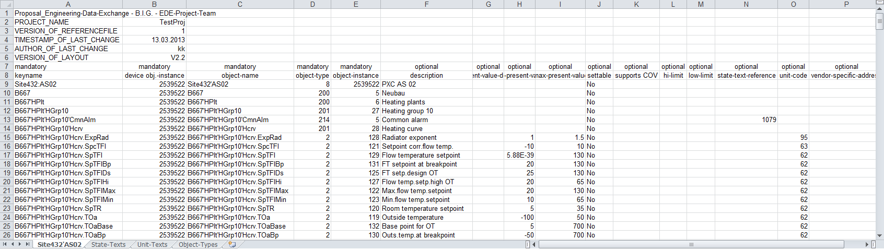
Definition of Tab Names | |
Tab Names | Contents |
EDE | Data point information |
State texts | State texts |
Unit texts | Units |
Object types | Is not evaluated |
NOTE:
The file separators must be changed if the information in the XLSX EDE file displays everything in one column.
1. Select Start > Control Panel > Clock, Language, Region > Change the date, time, or number format.
2. Select Formats > Additional settings > List separators.
3. Enter the corresponding file separator.
CSV with Reference Files
In the CSV file with reference files, various types of information are saved in individual files.

CSV without Reference Files
All information is saved in one CSV file without reference files.
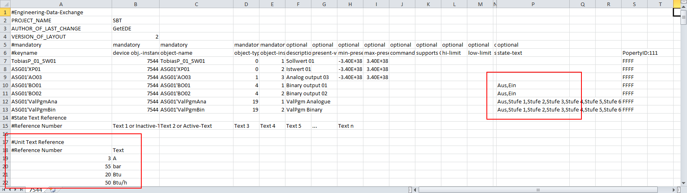
Text Groups
State Text
One text group is created for each state text during an EDE file import. The text groups are saved in the Management View in System Browser under Project > System settings > Libraries > L4 project > Common > Common > Texts. The descriptive name of the text group is formed from EdeStateTexts+File name+Number. A file name with a space is supplemented with _ (underscore).
Mapping the Text Group | ||||
| Prefix | Name | Suffix | System Browser |
File Name |
| Cosmos Open |
|
|
Text group 1 | EdeStateTexts | _Cosmos_Open | _0 | EdeStateTexts_Cosmos_Open_0 |
Text group 2 | EdeStateTexts | _Cosmos_Open | _1 | EdeStateTexts_Cosmos_Open_1 |
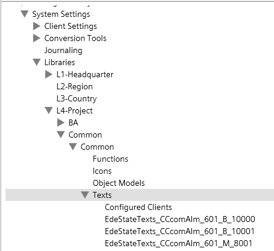
Use existing text groups for the state text
To avoid many new text groups, use the state-text-reference column to add the required text group. The functionality works for:
- _StateTexts.csv
- Tab StateTexts
- _StateTexts.csv as inline text defined
Syntax for a 3-stage fan:
- Add the comment *TxG*,TxG_BA_3147 if no limit is required or defined in the max-present-value column.
- Define the maximum stage of the fan *TxG*,TxG_BA_3147,4 for a 2-stage fan. This value is used if no value is defined in the max-present-value column.
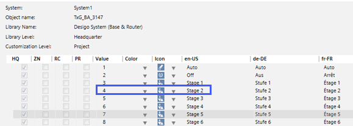
Simple scenario:
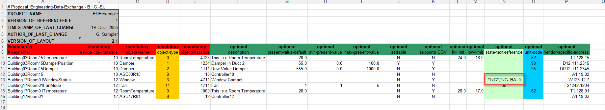
- Debug mode
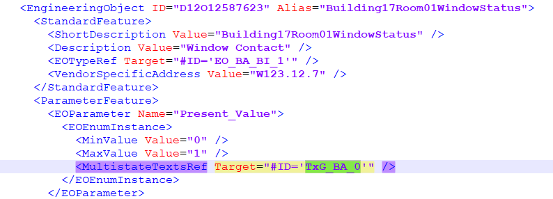
Scenario with max-present-value:
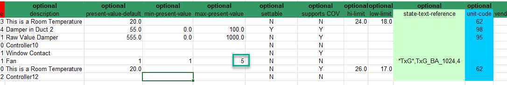
- Debug mode
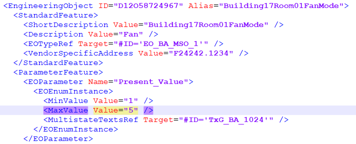
Scenario without min-present-value and max-present-value, but with stage text:
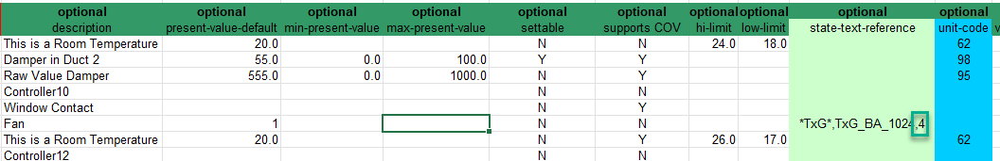
- Debug mode
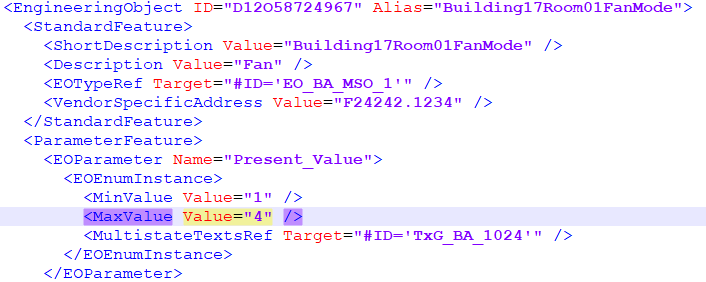
Additional information to the state text behavior:
- Default behavior (no min-present-value & no max-present-value & 2 texts (*TxG*,TxG_BA_1024)): Min and Max are set to «0» and «1» for binary, to «1» and «2» for multistate.
- min-present-value & max-present-value available: minimum and maximum values are available.
- No min-present-value & max-present-value available, but 3rd texts (*TxG*,TxG_BA_1024,4): Min is set to «1» and Max to the 3rd text (here 4) for multi-state (for binary, it remains at «0» and «1»).
- min-present-value set, for example, to value «3», but no max-present-value available for 3 texts (*TxG*,TxG_BA_1024,8): Min set to «3», Max to «8».
Units Text
An EdeUnitsTexts+File name text group is created to map units used.
Drop
The text groups are only deleted if referenced on a device. Multiple, referenced text groups must be manually deleted using the Text Group Editor.